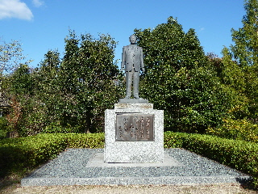

道の駅「掛合の里」には公園があるんですね。
更新日 : 2015/10/25

高速じゃなくて、のんびり帰ろうって54号を通りました。道の駅に寄って、その周りを散歩しました。
掛合には大きい公園があるんですね。竹下登さんの銅像がありました。
他にも遊具があるので、子供の遊び場にいいです。
島根県雲南市掛合町掛合1800-2
更新日 : 2015/10/25

高速じゃなくて、のんびり帰ろうって54号を通りました。道の駅に寄って、その周りを散歩しました。
掛合には大きい公園があるんですね。竹下登さんの銅像がありました。
他にも遊具があるので、子供の遊び場にいいです。